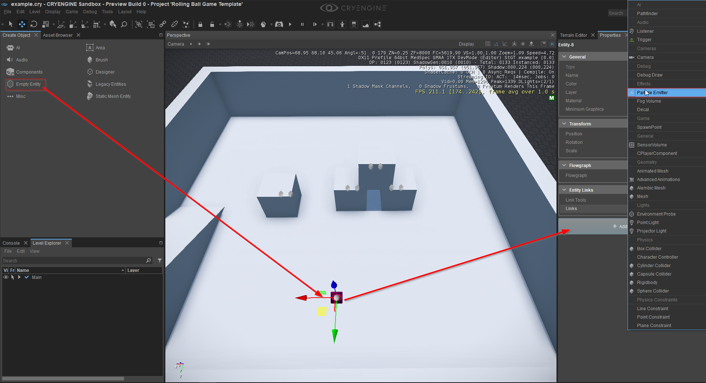
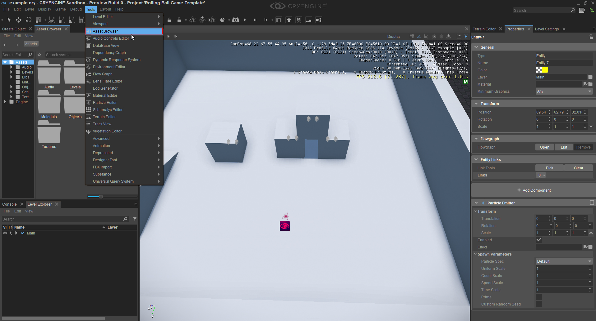
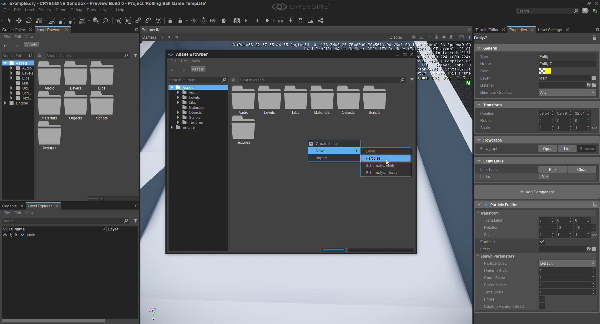
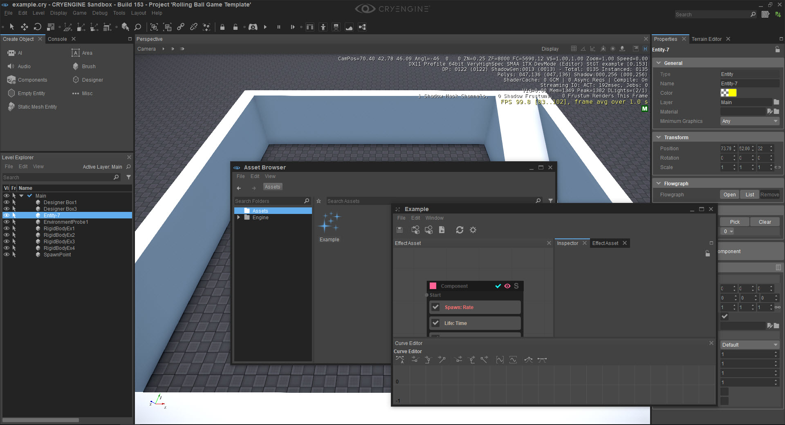
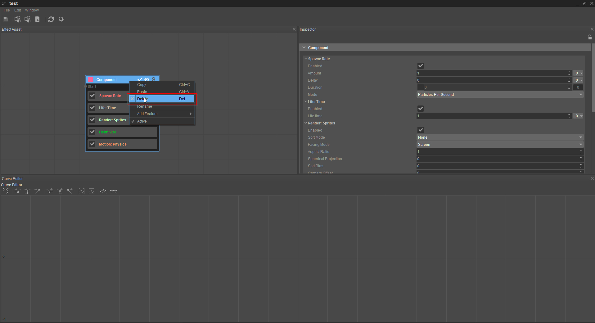
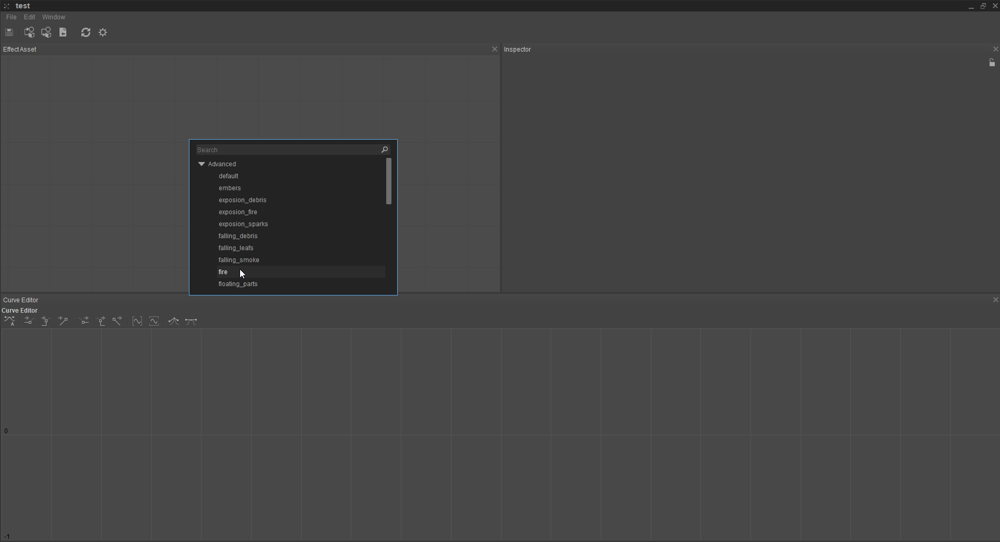
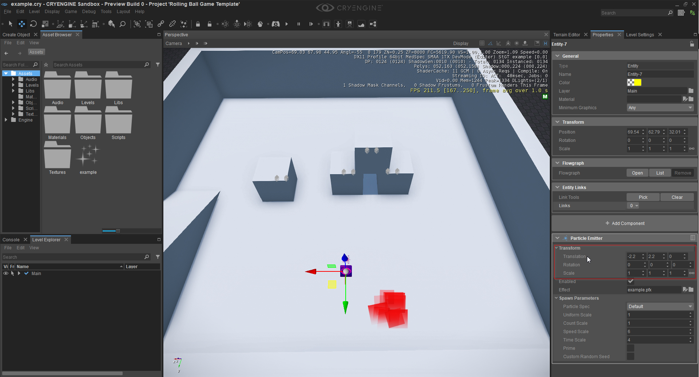

Using the Particle Component
This tutorial concentrates on the Particle Component and serves as an introduction to its use and to some of its features. The Particle Component, as the name suggests, allows you to add a Particle Emitter to an Entity.
Before attempting this tutorial we recommend that you read the Entity Components documentation. Doing so will give you a much better understanding of the concepts behind CRYENGINE's Entity Components, furthermore, the documentation can be used as a reference guide in regard to the various attributes/parameters that relate to each of the available Components.
Different methods can be used to create a new Entity, for more information see the Entity Components documentation.
You will need to open a new or an existing level in the Sandbox Editor in order to undertake this tutorial.
- First, we need to create a new Empty Entity and then add the Particle Emitter Component to it. In this example, we are using the Empty Entity method. From the Create Object tool, left mouse click on the Empty Entity Components icon, then drag and anchor the Empty Entity into your level (all with the left mouse button). The Empty Entity will be highlighted, the next step is to add the Particle Emitter Component using the + Add Component button (under the Properties Panel).

- In the image below you can see the Particle Emitter Component has opened in the Inspector (Properties Panel). We now need to add a Particle Effect to the Entity, but in order to do that, we must create one using the Asset Browser. In the normal default layout of the Sandbox Editor, the Asset Browser will be open, if not (as shown below) then go to Tools -> Asset Browser and open it.

- From the Asset Browser go to File -> New -> Particles this will create a Particle Effect, don't forget to give the Particle Effect a name and click Enter. If you do not it will not remain in the Asset Browser. Alternatively, right click in the main Asset Browser window, this will open a popup. Mousing over the New option in the popup will then open a further pop-up (see image below). Clicking on the Particles option will then create a folder for the Particle Effect - don't forget to name the folder and click Enter key. We have named our Particle Effect Example.

- From the Asset Browser double click on the Particle Effect folder (in our case Example), this will open the Particle Editor. We do not go into any detail about the Particle Editor 2 in this tutorial. In our example we will just be adding one of the default presets and use it for the Component. Delete the node in the graph and right click into the graph view, this should open a context menu with several pre-build effects. Open the advanced tab and create a "Fire" effect. Save the effect with the little save icon in the upper left corner and close the particle editor. It has the effect of placing the Example.pfx file into the Effect field of the Particle Emitter Component (Properties Panel) as shown in the image below. We can now edit the Particle Effect.

- We now need to delete the node. As can be seen in the image above the Component node header is black in color, whereas in the image below the Component header is light blue. To achieve this, right click on the Component header, this action will cause the Component header to change color to light blue and will also open the other pop up where the node can be deleted using the Delete option.

- Having deleted the node, right click somewhere in the EffectAsset window. This will open the context menu shown in the image below. Expand the Advanced menu (this contains several pre-built effects), in our case we will select the Fire effect. Finally, save the effect with the Save icon in the top left corner of the window and then close the Particle Editor.

- You can see the effect right away spawning from your Component. You can experiment with the effect in the Particle Editor for example by changing the color as in the example below. After adding the effect you can start to adjust the transformation of the particle, for example, to move the Component around - the position is relative to the Entity's origin. We can also manipulate the spawn parameters of the Particle Effect or disable or enable the particle.
